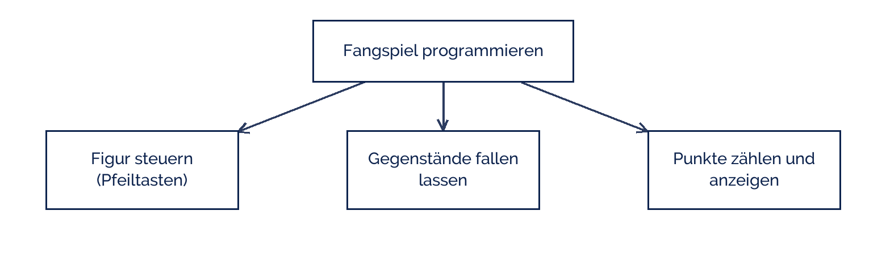

fotografierende
fotografierende
Good morning!
Nur das Schöne wird die Welt retten!
Fjodor Dostojewski
Nicht verzagen, Doc Alvers fragen!
Informatik — Klasse 9
Ein großes Problem gibt es nicht
Zerlegen, skizzieren, und erst dann an den Rechner
Nicht verzagen, Doc Alvers fragen!
Kapitel 01
Zerlegen
Die wichtigste Strategie der Informatik
Nicht verzagen, Doc Alvers fragen!
Warum man zerlegt
„Ein Spiel programmieren“ ist zu groß — daran fängt niemand an
„Die Figur soll sich mit den Pfeiltasten bewegen“ ist ein Teilproblem
Ein Teilproblem ist klein genug, dass eine Person es in einer Stunde löst
Und man merkt sofort, ob es funktioniert
Der Fachbegriff heißt Dekomposition — Zerlegen in Teilprobleme
Nicht verzagen, Doc Alvers fragen!
Aus einem großen Problem werden drei kleine

Jedes Teilproblem bekommt einen Namen und eine zuständige Person
Ist ein Teil immer noch zu groß, wird er noch einmal zerlegt
Nicht verzagen, Doc Alvers fragen!
Kapitel 02
Das Storyboard
Der Ablauf als Bilderfolge
Nicht verzagen, Doc Alvers fragen!
Ein Storyboard für das Fangspiel
| Bild | Was man sieht | Was passiert |
|---|---|---|
| 1 | Startbildschirm mit Titel | Klick auf die Flagge startet |
| 2 | Figur unten, Himmel oben | Gegenstände fallen |
| 3 | Figur fängt einen Gegenstand | Punktzahl steigt um 1 |
| 4 | Gegenstand fällt daneben | Leben um 1 weniger |
| 5 | Bildschirm „Game over“ | Punktzahl wird angezeigt |
Ein Storyboard zeigt den Ablauf aus Sicht des Nutzers — nicht den Programmcode
Wer es zeichnen kann, hat das Produkt verstanden. Wer nicht, muss noch nachdenken
Nicht verzagen, Doc Alvers fragen!
Für Robotik und Simulation geht das genauso
Robotik: welcher Sensorwert löst welche Bewegung aus? Eine Skizze je Situation
Simulation: welcher Zustand folgt auf welchen? Eine Skizze je Schritt
Grafik: wie sieht das Bild nach jedem Schritt aus?
In allen Fällen gilt: erst zeichnen, dann bauen
Das Blatt kostet fünf Minuten und spart zwei Stunden
Nicht verzagen, Doc Alvers fragen!
Kapitel 03
Die Reihenfolge
Was zuerst gebaut wird
Nicht verzagen, Doc Alvers fragen!
Womit anfangen?
| Reihenfolge | warum |
|---|---|
| 1. Das Herzstück | ohne das gibt es kein Produkt — Steuerung, Bewegung |
| 2. Die Rückmeldung | damit man sieht, ob es funktioniert — Punkte, Anzeige |
| 3. Der Abschluss | Ende, Gewinnen, Verlieren |
| 4. Die Verschönerung | Musik, Farben, Startbildschirm |
Verschönern kommt zuletzt — es fühlt sich gut an und bringt am wenigsten
Nach Schritt 3 habt ihr ein fertiges Produkt. Alles danach ist Zugabe
Nicht verzagen, Doc Alvers fragen!
Zerlegen, bis jedes Stück in eine Stunde passt. Was man nicht zeichnen kann, kann man auch nicht programmieren.
Merksatz
Nicht verzagen, Doc Alvers fragen!
Fun Facts: Zerlegen
Teile und herrsche ist über 2000 Jahre alt — als Strategie, nicht als Programmiertipp
In der Informatik heißt sie divide and conquer und steckt in vielen Algorithmen
Ein Storyboard kommt aus dem Film — Disney nutzte es schon in den 1930er Jahren
Profis zeichnen es heute noch auf Papier, weil es dort schneller geht als am Rechner
Die Frage „Was ist das kleinste Stück, das ich testen kann?“ ist die halbe Miete
Nicht verzagen, Doc Alvers fragen!
Eure Aufgabe heute
Zerlegt euer Projekt in drei bis fünf Teilprobleme
Prüft jedes: passt es in eine Stunde Arbeit? Wenn nicht: weiter zerlegen
Zeichnet ein Storyboard mit mindestens fünf Bildern
Legt die Reihenfolge fest: was baut ihr zuerst, was zuletzt?
Bringt Skizze und Liste nächste Woche mit — dann werden Aufgaben verteilt
Nicht verzagen, Doc Alvers fragen!